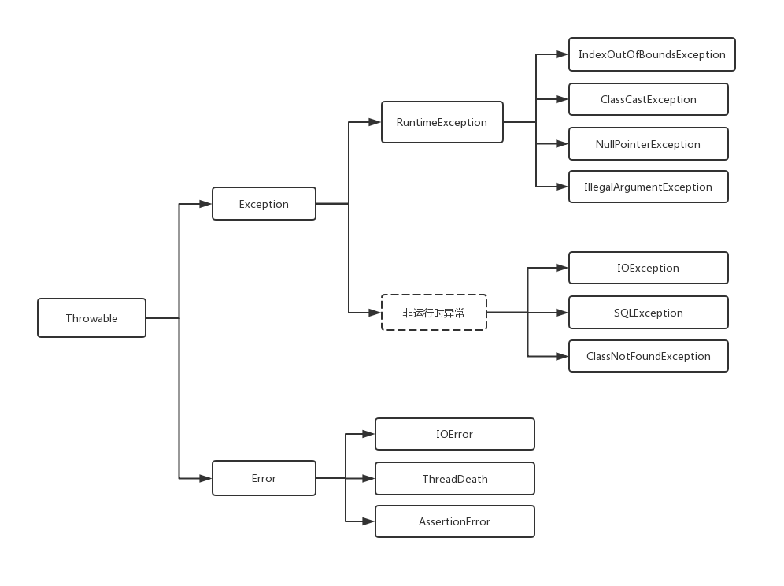
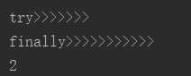

相信各位朋友对异常并不陌生，对它我们真的又喜又悲，成功的解决一个BUG那真是欢天喜地，但是又怕遇见它，今天小编就给大家笼统的介绍一下我们的每天相处的好朋友–异常。
Java 异常类结构体系图
既然想要了解异常，那么我们首先要了解一下，异常的结构体系：

Java异常分析
Throwable
Throwable 类是 Java 语言中所有错误或异常的超类。只有当对象是此类（或其子类之一）的实例时，才能通过 Java 虚拟机或者 Java throw 语句抛出。
Thowable 类有两个子类的实例，Error 和 Exception，通常用于指示发生了异常情况。通常，这些实例是在异常情况的上下文中新近创建的，因此包含了相关的信息（比如堆栈跟踪数据）。
Throwable 的两个子类 Error 和 Exception
Error
Error 是 Throwable 的子类，用于指示合理的应用程序不应该试图捕获的严重问题。大多数这样的错误都是异常条件。虽然 ThreadDeath 错误是一个“正规”的条件，但它也是 Error 的子类，因为大多数应用程序都不应该试图捕获它。
Exception
Exception 类及其子类是 Throwable 的一种形式，它指出了合理的应用程序想要捕获的条件。
Exception 类分为两大类：RuntimeException （运行异常类） 和 Non_RuntimeException （非运行异常类）：
- RuntimeException
运行时异常都是RuntimeException类及其子类异常，如NullPointerException、IndexOutOfBoundsException等，这些异常是不检查异常，程序中可以选择捕获处理，也可以不处理。这些异常一般是由程序逻辑错误引起的，程序应该从逻辑角度尽可能避免这类异常的发生。
当出现RuntimeException的时候，我们可以不处理。当出现这样的异常时，总是由虚拟机接管。比如：我们从来没有人去处理过NullPointerException异常，它就是运行时异常，并且这种异常还是最常见的异常之一。
出现运行时异常后，如果没有捕获处理这个异常（即没有catch），系统会把异常一直往上层抛，一直到最上层，如果是多线程就由Thread.run()抛出，如果是单线程就被main()抛出。抛出之后，如果是线程，这个线程也就退出了。如果是主程序抛出的异常，那么这整个程序也就退出了。运行时异常是Exception的子类，也有一般异常的特点，是可以被catch块处理的。只不过往往我们不对他处理罢了。也就是说，你如果不对运行时异常进行处理，那么出现运行时异常之后，要么是线程中止，要么是主程序终止。
如果不想终止，则必须捕获所有的运行时异常，决不让这个处理线程退出。队列里面出现异常数据了，正常的处理应该是把异常数据舍弃，然后记录日志。不应该由于异常数据而影响下面对正常数据的处理。
- 非运行异常
非运行时异常是RuntimeException以外的异常，类型上都属于Exception类及其子类。如IOException、SQLException等以及用户自定义的Exception异常。对于这种异常，JAVA编译器强制要求我们必需对出现的这些异常进行catch并处理，否则程序就不能编译通过。所以，面对这种异常不管我们是否愿意，只能自己去写一大堆catch块去处理可能的异常。
常见运行时异常
- 算术异常类：ArithmeticExecption
- 空指针异常类：NullPointerException
- 类型强制转换异常：ClassCastException
- 数组负下标异常：NegativeArrayException
- 数组下标越界异常：ArrayIndexOutOfBoundsException
- 违背安全原则异常：SecurityException
- 字符串转换为数字异常：NumberFormatException
- 尝试访问null对象成员：NullPointerException
- 欲得到的数据类型与实际输入的类型不匹配：InputMismatchException
- 方法接收到非法参数：IllegalArgumentException
常见的编译时异常
- 不能加载所需的类(常见于多态中向下转型)：ClassNotFoundException
- 文件未找到异常：FileNotFoundException
- 提供关于数据库访问错误或其他错误信息的异常：SQLException
- 当发生某种 I/O 异常时，抛出此异常：IOException
- 当数据格式发生错误时，抛出此异常：DataFormatException
- 表示解析时出现意外错误抛出此异常：ParseException
异常的捕获和处理
Java异常的捕获和处理是一个不容易把握的事情，如果处理不当，不但会让程序代码的可读性大大降低，而且导致系统性能低下，甚至引发一些难以发现的错。
Java异常处理涉及到五个关键字，分别是：try、catch、finally、throw、throws。下面将骤一介绍，通过认识这五个关键字，掌握基本异常处理知识。
try：它里面放置可能引发异常的代码
catch：后面对应异常类型和一个代码块，用于表明该catch块用于处理这种类型的代码块，可以有多个catch块。
finally：主要用于回收在try块里打开的物力资源（如数据库连接、网络连接和磁盘文件），异常机制总是保证finally块总是被执行。只有finally块，执行完成之后，才会回来执行try或者catch块中的return或者throw语句，如果finally中使用了return或者throw等终止方法的语句，则就不会跳回执行，直接停止。
finally 关键字：
1 | public Integer test1() { |
上面的示例：返回的结果为： 2
1 | public Integer test() { |
上面的示例，返回的结果为：

throw：用于抛出一个实际的异常，可以单独作为语句使用，抛出一个具体的异常对象。
throws：用在方法签名中，用于声明该方法可能抛出的异常。
throw与throws关键字的区别
（1）throw关键字是用于方法体内部，用来抛出一个Throwable类型的异常。如果抛出了检查异常，则还应该在方法头部声明方法可能抛出的异常类型。该 方法的调用者也必须检查处理抛出的异常。如果所有方法都层层上抛获取的异常，最终JVM会进行处理，处理也很简单，就是打印异常消息和堆栈信息。如果抛出 的是Error或RuntimeException，则该方法的调用者可选择处理该异常。
（2）throws关键字用于方法体外部的方法声明部分，用来声明方法可能会抛出某些异常。仅当抛出了检查异常，该方法的调用者才必须处理或者重新抛出该异常。当方法的调用者无力处理该异常的时候，应该继续抛出，而不是囫囵吞枣一般在catch块中打印一下堆栈信息做个勉强处理。
1 | public void test(int i) throws IllegalArgumentException{ |
说明：throws IllegalArgumentException 表示：此方法可能抛出 IllegalArgumentException 异常，至于抛不抛还要看方法中是否会捕捉到 IllegalArgumentException 异常。throw new IllegalArgumentException(“参数异常”); 表示 if 语句判断，是否会捕捉到 IllegalArgumentException 异常。
总结如下：
- throws语句用在方法声明后面，用来声明方法可能会抛出某些异常，由该方法的调用者来处理；throw语句用在方法体内，用来抛出一个Throwable类型的异常，由方法体内的语句处理。
- throws主要是声明这个方法会抛出这种类型的异常，使它的调用者知道要捕获这个异常；throw是具体向外抛异常的动作，所以它是抛出一个异常实例。
- throws表示出现异常的一种可能性，并不一定会发生这些异常；throw则是抛出了异常，执行throw则一定抛出了某种异常。
异常在继承中注意事项
- 1.如果一个子类继承父类后,要重写父类继承过来的方法, 如果父类上没有声明编译时异常,子类方法不可以声明编译时异常。
- 2.如果一个子类继承父类后,要重写父类继承过来的方法,父类方法上有编译时异常声明,子类方法可以不用声明异常。
- 3.如果一个子类继承父类后,要重写父类继承过来的方法,父类方法上有编译时异常声明,子类方法不可以定义比父类方法范围大的异常。
附加：
有return的情况下try catch finally的执行顺序
结论：
- 不管有木有出现异常，finally块中代码都会执行；
- 当try和catch中有return时，finally仍然会执行；
- finally是在return后面的表达式运算后执行的（此时并没有返回运算后的值，而是先把要返回的值保存起来，管finally中的代码怎么样，返回的值都不会改变，任然是之前保存的值），所以函数返回值是在finally执行前确定的；
- finally中最好不要包含return，否则程序会提前退出，返回值不是try或catch中保存的返回值。
举例：
情况1：
try{} catch(){}finally{} return;
显然程序按顺序执行。1
2
3
4
5
6
7
8
9
10
11
12public int test(){
int i = 1;
try {
i++;
} catch (Exception e) {
e.printStackTrace();
++i;
}finally {
System.out.println(i); // i = 2
}
return i; // i = 2
}情况2:
try{ return; }catch(){} finally{} return;
程序执行try块中return之前（包括return语句中的表达式运算）代码；
再执行finally块，最后执行try中return;
finally块之后的语句return，因为程序在try中已经return所以不再执行。1
2
3
4
5
6
7
8
9
10
11
12
13
14public int test(){
int i = 1;
try {
i++;
return i; // i = 2
} catch (Exception e) {
e.printStackTrace();
++i;
}finally {
i +=3;
System.out.println(i); // i = 5
}
return i; // 该语句未执行
}情况3:
try{ } catch(){return;} finally{} return;
程序先执行try，如果遇到异常执行catch块，
有异常：则执行catch中return之前（包括return语句中的表达式运算）代码，再执行finally语句中全部代码，
最后执行catch块中return. finally之后也就是4处的代码不再执行。
无异常：执行完try再finally再return.1
2
3
4
5
6
7
8
9
10
11
12
13
14
15
16
17/**
* 有异常
* @return
*/
public int test(){
int i = 1;
try {
int j = i/0;
} catch (Exception e) {
e.printStackTrace();
return i; // i = 1
}finally {
i +=3;
System.out.println(i); // i = 4
}
return i; // 该语句未执行
}无异常的情况和情况1 的执行顺序一样。
情况4:
try{ return; }catch(){} finally{return;}
程序执行try块中return之前（包括return语句中的表达式运算）代码；
再执行finally块，因为finally块中有return所以提前退出。1
2
3
4
5
6
7
8
9
10
11
12
13public int test(){
int i = 1;
try {
i++;
return i; //该语句未执行
} catch (Exception e) {
e.printStackTrace();
}finally {
i +=3;
System.out.println(i); // i = 5
return i; // i = 5
}
}情况5:
try{} catch(){return;}finally{return;}
程序执行catch块中return之前（包括return语句中的表达式运算）代码；
再执行finally块，因为finally块中有return所以提前退出。1
2
3
4
5
6
7
8
9
10
11
12
13public int test(){
int i = 1;
try {
i++;
} catch (Exception e) {
e.printStackTrace();
return i; // 不管有没有异常该语句都不执行
}finally {
i +=3;
System.out.println(i); // i = 5
return i; // i = 5
}
}情况6:
try{ return;}catch(){return;} finally{return;}
程序执行try块中return之前（包括return语句中的表达式运算）代码；
有异常：执行catch块中return之前（包括return语句中的表达式运算）代码；则再执行finally块，因为finally块中有return所以提前退出。无异常：则再执行finally块，因为finally块中有return所以提前退出。
1
2
3
4
5
6
7
8
9
10
11
12
13
14
15public int test(){
int i = 1;
try {
i++;
int j = i/0;
return i; // 不管有没有异常该语句都不执行
} catch (Exception e) {
e.printStackTrace(); //有异常的情况执行
return i; // 不管有没有异常该语句都不执行
}finally {
i +=3;
System.out.println(i); // i = 5
return i; // i = 5
}
}
总结：
任何执行try 或者catch中的return语句之前，都会先执行finally语句，如果finally存在的话。
如果finally中有return语句，那么程序就return了，所以finally中的return是一定会被return的
final, finally, finalize的区别
finally 是异常处理语句结构的一部分，表示总是执行.
finalize 是Object类的一个方法，在垃圾收集器执行的时候会调用被回收对象的此方法，可以覆盖此方法提供垃圾收集时的其他资源回收，例如关闭文件等. JVM不保证此方法总被调用.
final：修饰符（关键字）
如果一个类被声明为final，意味着它不能再派生出新的子类，不能作为父类被继承。因此一个类不能既被声明为 abstract的，又被声明为final的。
将变量或方法声明为final，可以保证它们在使用中不被改变。
被声明为final的变量必须在声明时给定初值，而在以后的引用中只能读取，不可修改。被声明为final的方法也同样只能使用，不能重载
finally
再异常处理时提供 finally 块来执行任何清除操作。如果抛出一个异常，那么相匹配的 catch 子句就会执行，然后控制就会进入 finally 块（如果有的话）。
finalize：方法名。
Java 技术允许使用 finalize() 方法在垃圾收集器将对象从内存中清除出去之前做必要的清理工作。这个方法是由垃圾收集器在确定这个对象没有被引用时对这个对象调用的。
它是在 Object 类中定义的，因此所有的类都继承了它。子类覆盖finalize() 方法以整理系统资源或者执行其他清理工作。finalize() 方法是在垃圾收集器删除对象之前对这个对象调用的。